Overview
In this homework, we implement a rasterizer that can process svg files and svg objects. Given instances of
objects in an svg, we implement methods to draw and color triangles on a pixel screen. To do this, we first
draw a
triangle by determining if points lie within a triangle, color these triangles with sampled colors, and
finally
display them in a frame buffer. I found the code-to-visualization pipeline interesting, as I had never
written
code where I could so visually and clearly see the results of my implementations.
Section I: Rasterization
Part 1: Rasterizing single-color triangles
1. We rasterize triangles by first, looping through points in the frame buffer, then determining whether or not
the
$x +
0.5$, $y + 0.5$ point is within the triangle using the half-plane algorithms, and finally, coloring the pixel if
the
point is in the triangle.
EC Optimizations:
Trying optimizations of not looping through the entire frame buffer (only loop from the miniumum triangle x
coord to
maximium and vice versa for y). These optimizations were implemented after supersampling was implemented.
Time (in microseconds) to rasterize entire image. Timed with
std::chrono()
(Testing on basic/test3.svg)
|
Supersample Rate
|
Only loop from $[min_x, max_x], [min_y, max_y]$
|
No optimizations
|
|
1 per pixel
|
19383 microseconds
|
121047 microseconds
|
|
4 per pixel
|
59684 microseconds
|
212412 microseconds
|
|
9 per pixel
|
140143 microseconds
|
413413 microseconds
|
|
16 per pixel
|
223361 microseconds
|
1623411 microseconds
|
Part 2: Antialiasing triangles
To supersample, we first resize our sample_buffer to be effectively a frame buffer for a higher resolution
image,
then we populate this higher resolution image as normal and finally call a restore to frame buffer to average
out
each of the relevant samples in each pixel. This changed the resolving to framebuffer and filling framebuffer
sections of the pipeline.
|
Basic test 4 supersample 1
|
|
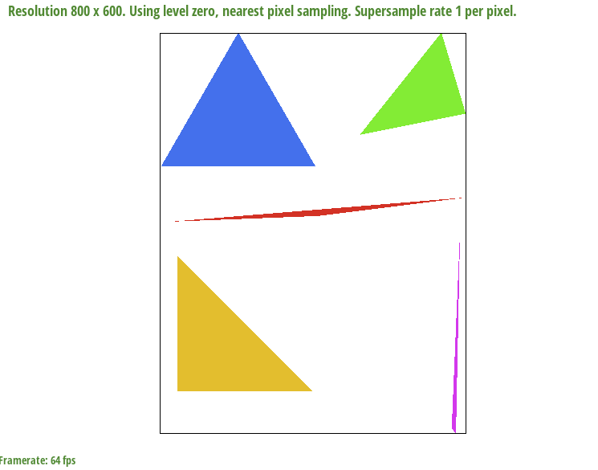
Basic test 4 supersample 4
|
|
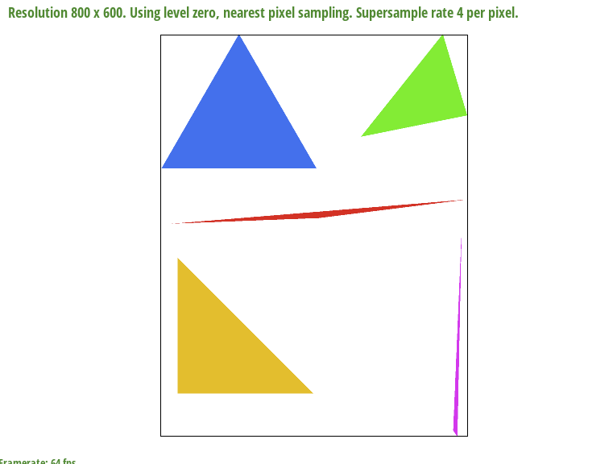
Basic test 4 supersample 16
|
Extra Credit: Alternative Antialiasing sample
I implemented random sampling instead of super sampling within the pixel, uses the same sampling rate and
std::random
libraries.
|
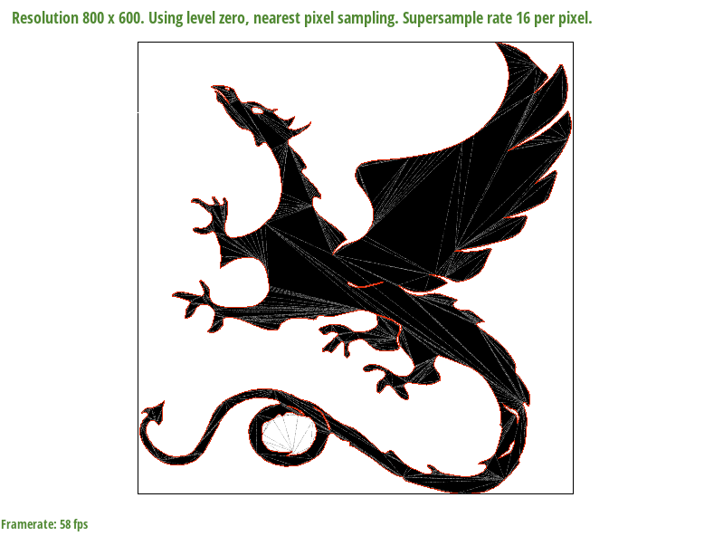
Basic test 4 supersample 1. Sampling randomly within the pixel
doesn't draw the
lines of the triangles. uniformly can get the lines of the triangles.
|
|
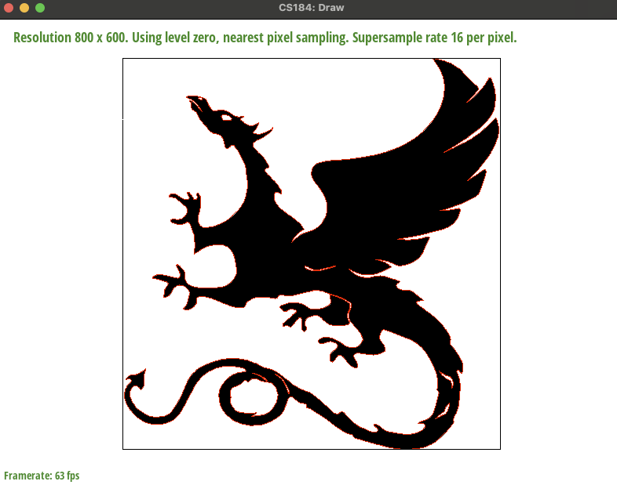
Basic test 4 supersample 4
|
Part 3: Transforms
I tried giving the cubeman a sword and making his left side smaller (smaller left leg, smaller left arm).
Section II: Sampling
Part 4: Barycentric coordinates
Barycentric coordinates of a point take the weighted average of a set of coordinates given in the input. The
closer
coordinates are to one vertex, the more likely they will look like the given vertex in the input.
|
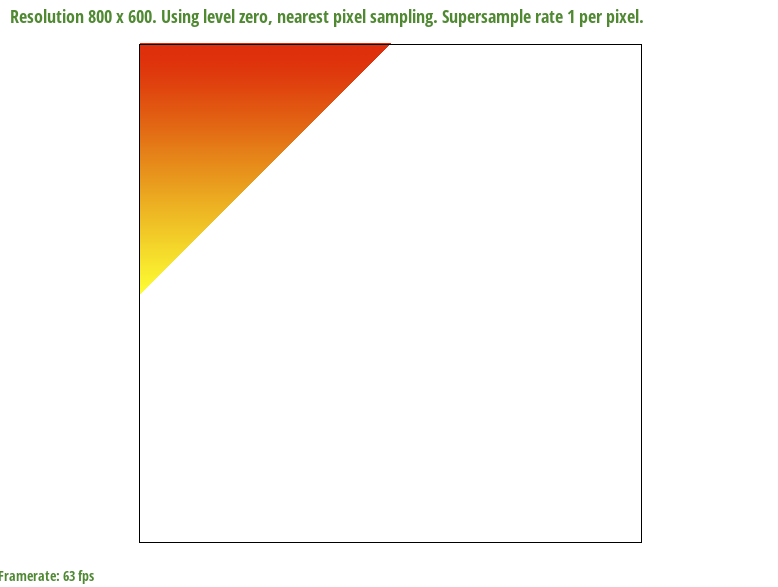
Illustrating yellow as the bottom coordinate (closer to yellow is
more yellow)
|
Part 5: "Pixel sampling" for texture mapping
Pixel sampling is where, for every point that we are planning to sample, if it's within the triangle that we are
trying to texturize, we find it's barycentric coordinates within this triangle. Using these coordinates, we then
compute a weighted sum of the corresponding textures that this should sample to. This will give us a color to
correspond to the sample point. Our final image can be recovered from these samples. Billinear sampling, as
opposed
to nearest sampling does this, but corresponds each sample with more neighbors. Meaning for a given point in our
sample texture, we linearly interpolate the best color using the colors from points close to it.
We look at texmap/test1.svg to see the line between Africa and the ocean on using the different pixel sampling
methods.
|
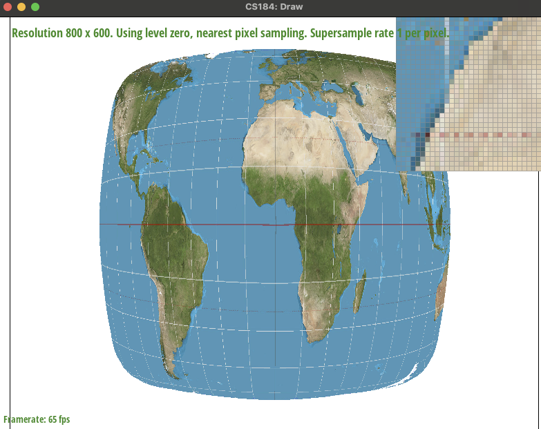
nearest sampling 1 supersampling
|
|
nearest sampling 16 supersampling
|
|
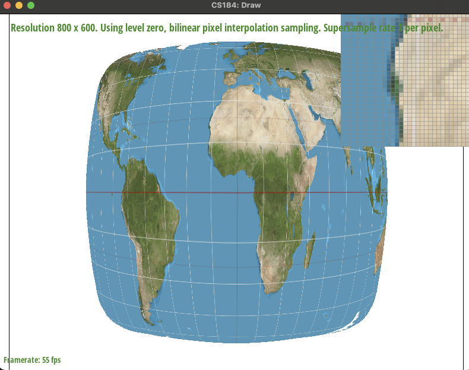
bilinear sampling 1 supersampling
|
|
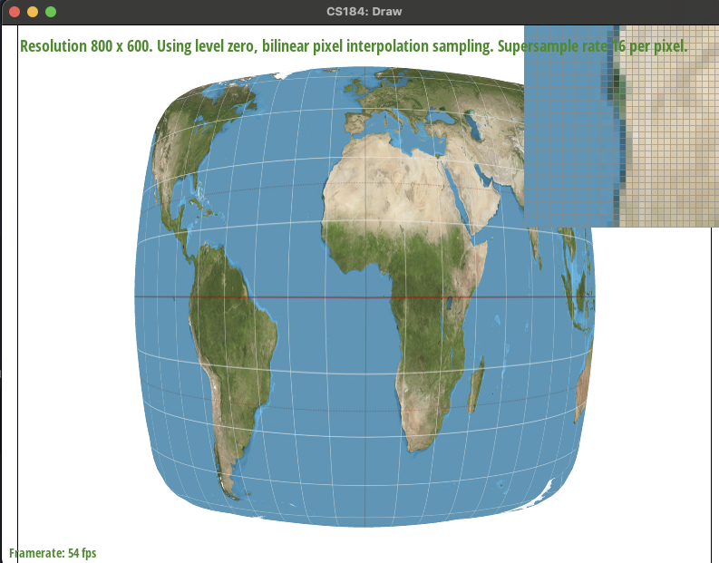
bilinear sampling 16 supersampling
|
A large difference between bilinear and pixel sampling exists due to the variations in how the sampling is done.
In
bilinear sampling, we are averaging out so sharp lines are not as contrasting and will not affect our final
image as
much.
Part 6: "Level sampling" with mipmaps for texture mapping
Level sampling works with reduced texture "mipmaps", which are lower resolution images of our given texture.
Using
this, we generate an image by sampling the corresponding color from the mip map for the given UV coordinates.
This
can also be interpolated linearly between different levels.
Made 4 images of a lebron texture to showcase the different sampling methods.
|
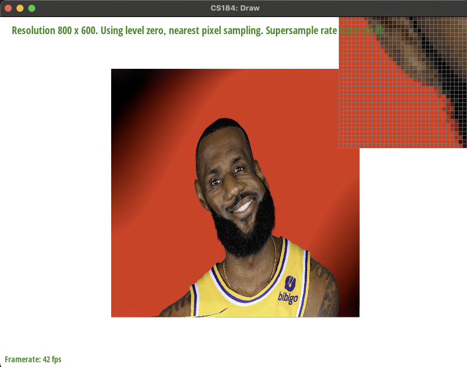
Lebron base texture level 0 and nearest
|
|
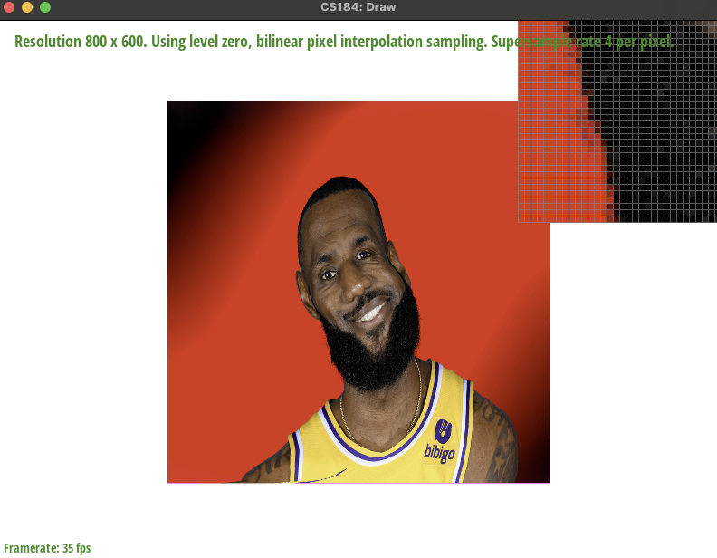
LeBron sampled with bilinear interpolation
|
|
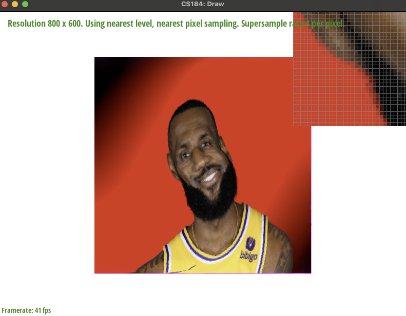
Lebron sampled with nearest pixel and nearest level sampling
|
|
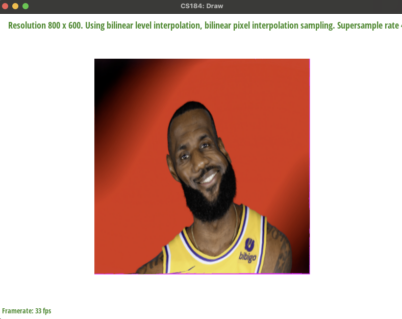
Trilinear sampling on LeBron
|
Section III: Art Competition
If you are not participating in the optional art competition, don't worry about this section!
Part 7: Draw something interesting!